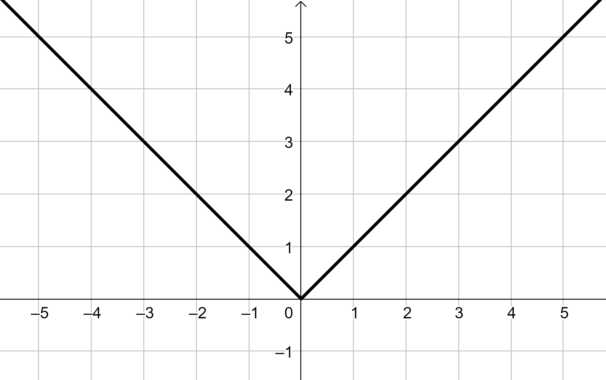

Compiti per casa
Derivata della funzione \(\boldsymbol{y = \left|x\right|}\)
La derivata della funzione \(f(x)= \left|x\right|\) è
\[
f'(x) = \dfrac{x}{|x|} =
\begin{cases}
-1 \,\, &se\,\,x \lt 0
\\\\
1 \,\, &se\,\,x \gt 0
\end{cases}
\]
Dal grafico possiamo osservare che la funzione modulo non è derivabile in \(x = 0\), presenta un punto angoloso.

La scrittura \(y' = \dfrac{x}{|x|}\) è quella che viene usata nei calcoli.
Esercizio 1
Svolgere gli esercizi n° 59, 60, pag. 1711
Esercizio 2
-
Svolgere gli esercizi n° 24, 25 pag. 1708.
-
Svolgere gli esercizi n° 42, 43 pag. 1709